Camshaft Position Actuator Replacement
Camshaft Position Actuator Replacement
Tools Required
^ EN 46330 Timing Belt Tensioner Retaining Pin
^ J 45059 Angle Meter
Removal Procedure
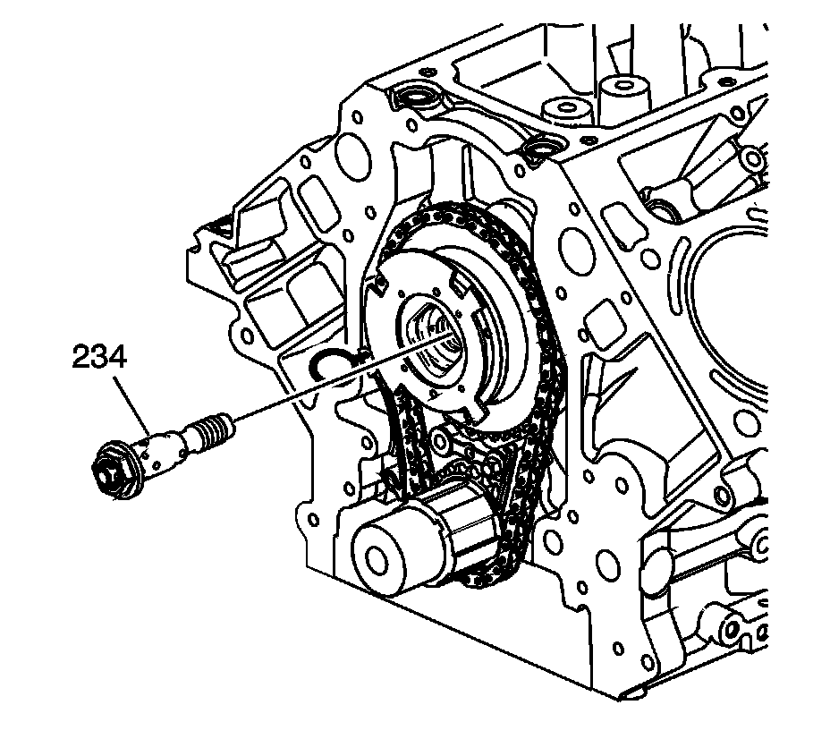
1. Remove the oil pump. Refer to Oil Pump, Screen, and Crankshaft Oil Deflector Replacement.
2. Remove and discard the camshaft position (CMP) actuator solenoid valve (234).
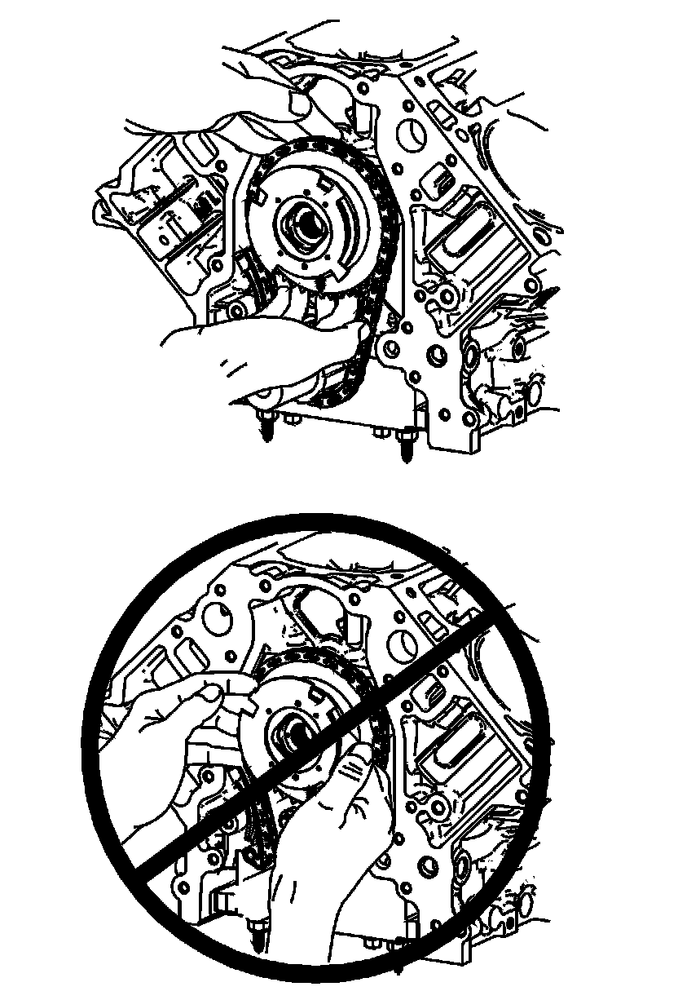
Caution: Do not push or pull on the reluctor wheel of the camshaft position (CMP) actuator during removal or installation. The reluctor wheel is retained to the front of the CMP actuator by 3 roll pins. Pushing or pulling on the wheel may dislodge the wheel from the front of the actuator. The actuator return spring is under tension and may rotate the dislodged reluctor wheel, causing personal injury.
3. Loosen and separate the CMP actuator and timing chain from the camshaft. Position your fingers behind the actuator sprocket and pull the actuator away from the front of the camshaft. Never pull on the reluctor wheel when attempting to remove the actuator.
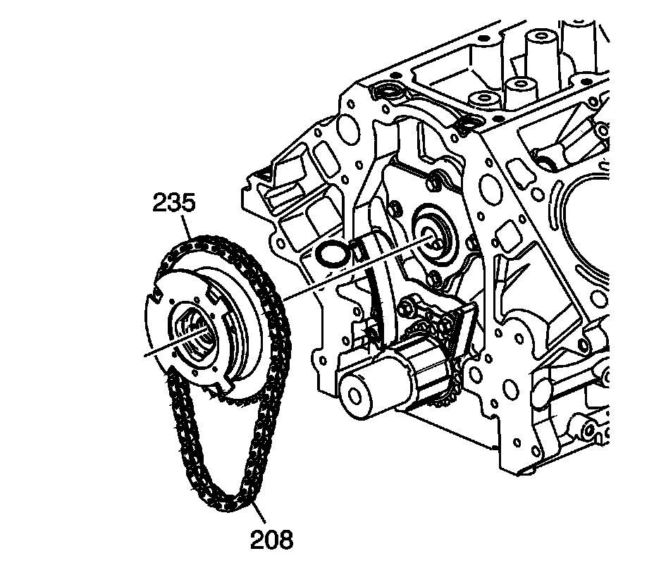
4. Remove the CMP actuator (235) and timing chain (208).
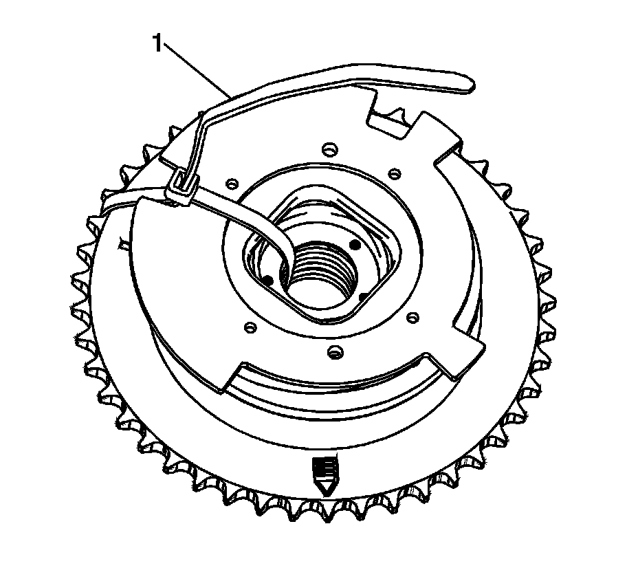
5. Insert and secure a tie strap (1) through the center of the actuator and over the reluctor wheel.
Installation Procedure
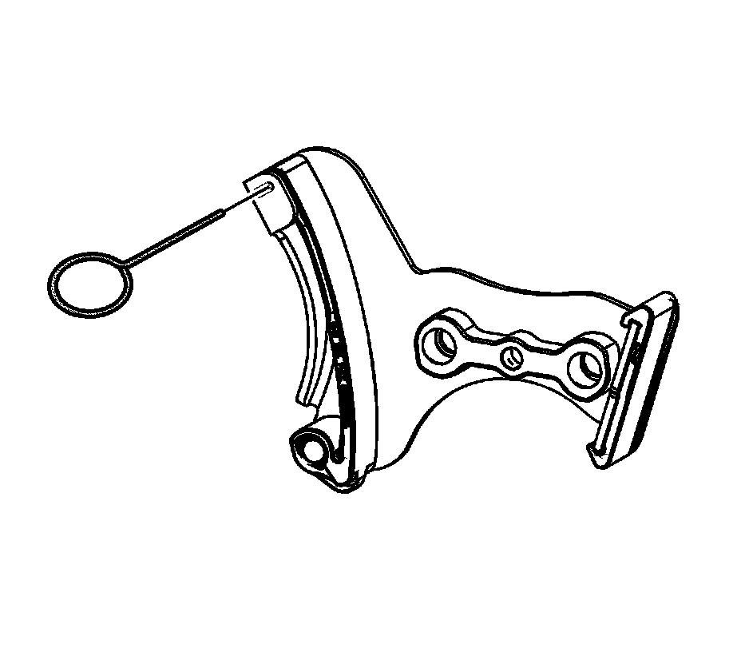
1. Compress the timing chain tensioner guide and install the EN 46330.
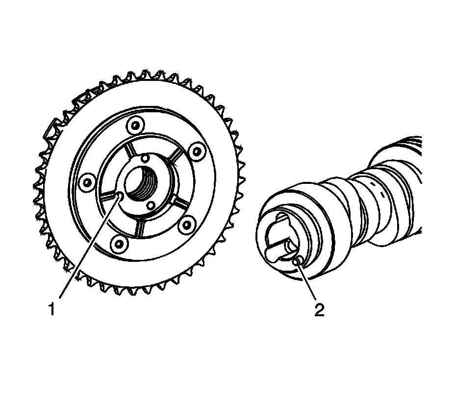
Important:
^ Properly locate the CMP actuator on the locating pin of the camshaft.
^ The sprocket teeth and timing chain must mesh.
^ The camshaft and the crankshaft sprocket alignment marks MUST be aligned properly.
^ DO NOT use the CMP solenoid valve again. Install a NEW valve during assembly.
Identify the alignment hole (1) in the rear face of the CMP actuator and the locating pin (2) on the front face of the camshaft.
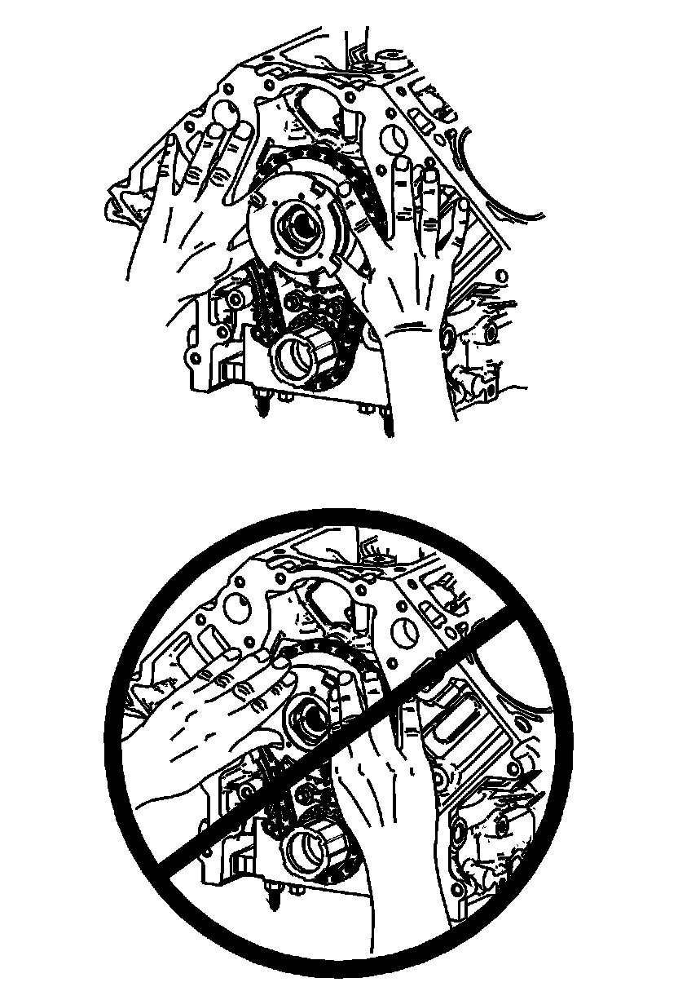
Caution: Do not push or pull on the reluctor wheel of the camshaft position (CMP) actuator during removal or installation. The reluctor wheel is retained to the front of the CMP actuator by 3 roll pins. Pushing or pulling on the wheel may dislodge the wheel from the front of the actuator. The actuator return spring is under tension and may rotate the dislodged reluctor wheel, causing personal injury.
2. Install the CMP actuator and timing chain. Align the hole in the rear face of the CMP actuator with the locating pin on the front face of the camshaft. If necessary, rotate the camshaft or crankshaft sprockets in order to align the timing marks. Use care to install the actuator completely onto the front of the camshaft. Position your fingers onto the face of the actuator sprocket and push the actuator onto the front of the camshaft. Never push on the reluctor wheel when attempting to install the actuator.
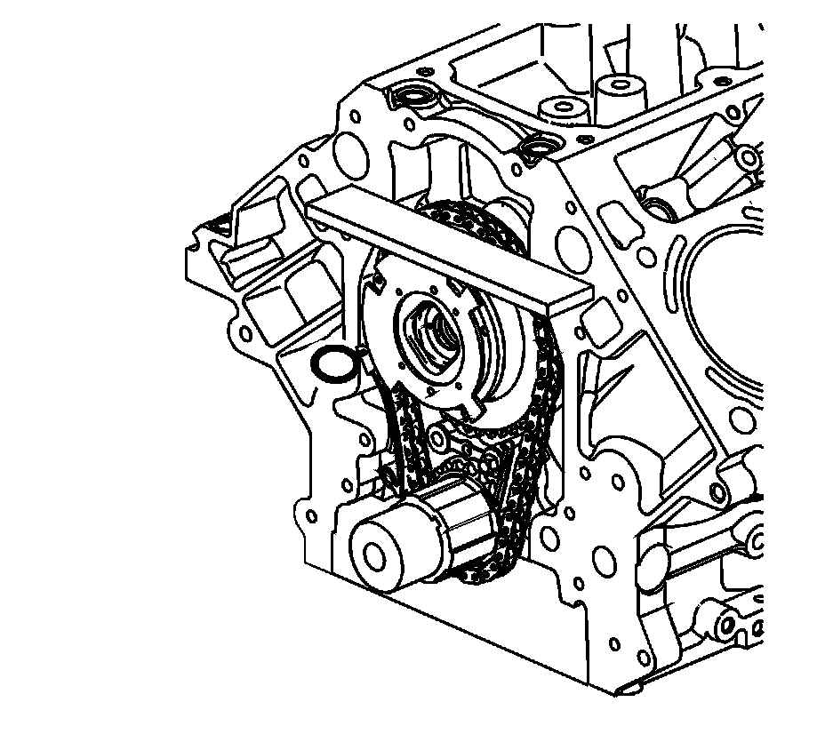
3. Place a straight edge across the front face of the engine block and inspect for proper installation of the CMP actuator and timing chain. With the CMP actuator properly and completely installed onto the front of the camshaft, the timing chain will not protrude beyond the front face of the engine block.
4. Install a NEW CMP actuator solenoid valve (234). With the CMP actuator properly positioned onto the camshaft, the CMP actuator solenoid valve can be threaded completely into the camshaft using light hand pressure. Tighten by hand until snug.
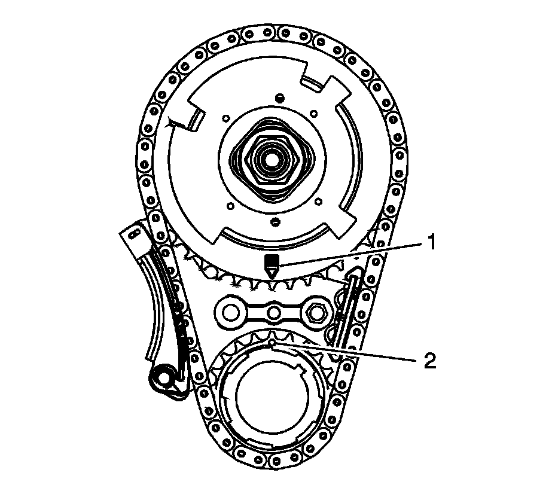
5. Inspect the sprockets for proper alignment. The mark on the CMP actuator sprocket (1) should be located in the 6 o'clock position and the mark on the crankshaft sprocket (2) should be located in the 12 o'clock position.
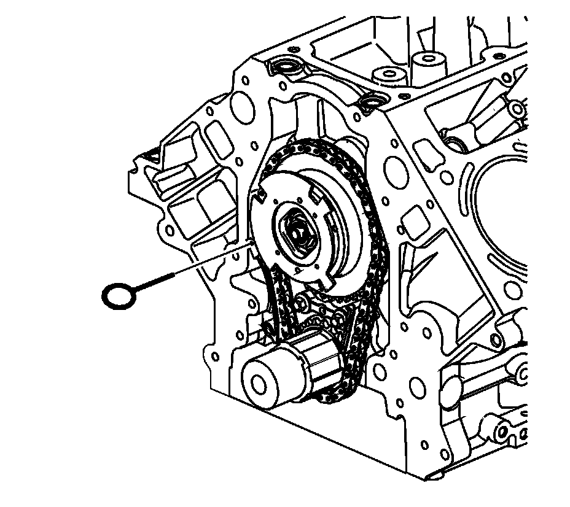
6. Remove the EN 46330.
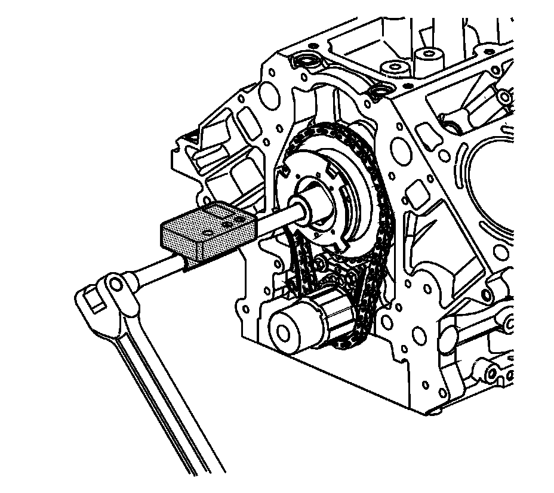
Notice: Refer to Fastener Notice.
7. Tighten the CMP actuator solenoid valve.
1. Tighten the valve a first pass to 65 N.m (48 lb ft).
2. Tighten the valve a final pass and additional 90 degrees using J 45059.
8. Install the oil pump. Refer to Oil Pump, Screen, and Crankshaft Oil Deflector Replacement.